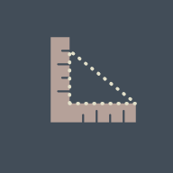

看教學

日式大木作工具箱
台尺・公制混算與規矩術，現場隨身好用
大工・墨付け・規矩術
📢 最新更新
加到手機桌面
加到桌面後，像 App 一樣全螢幕開啟，沒有網路也能用。資料只存在你自己的手機，不會上傳。
iPhone / iPad（Safari）
- 用 Safari 開啟本網址（LINE、Facebook 內建瀏覽器不行）
- 點下方的「分享」按鈕（方框加向上箭頭）
- 往下找「加入主畫面」並點選，再按右上角「加入」
Android（Chrome）
- 用 Chrome 開啟本網址
- 點右上角「⋮」選單
- 選「安裝應用程式」或「加到主畫面」
⚠️ 你目前好像在 LINE 或 Facebook 的內建瀏覽器裡，請先點右上角選「用瀏覽器開啟」，再照上面步驟。
更新後如果畫面沒變，把 App 從多工畫面完全關掉再重開一次即可。
資料說明與可信度
已查證：附有來源網址，可按「查看來源」。目前很少，因為台灣大木作用語難以找到公開的對照表。
常見對應：業界一般的對應，但還沒有逐項查證。
待確認：兩邊構造不完全相同、台灣沒有固定說法，或各地各師傅說法不同。
現場行話（台語音、日語外來語）為資料提供者所述，尚未逐項查證，請以現場匠師的說法為準。
台灣的傳統漢式大木（閩南、客家匠師）、日治時期木構造、與現場師傅的口語行話常常並存，同一個部位可能有三種講法；你的修正可以用「＋ 我的說法」記在自己的手機，再用「複製我的詞條」傳給我併進內建詞庫。
點一下圖上的構件，下方會顯示台日對照。
歷史紀錄 履歴
先點數字，再點單位（丈・尺・寸・分・間・mm），連著點會自動相加，例如「2 丈 5 寸」；沒點單位的數字會當作 mm。
1 丈 = 10 尺，1 間 = 6 尺（日式）。1 台尺 = 10/33 公尺 ≈ 303.03 mm，與日本的 1 尺相同。
點算式中間的位置，可以在那裡插入或修改。要輸入 cm、m 或其他字，請按「改用手機鍵盤」。
計算長度
椽木逐支遞減 配付垂木
公式（水平股 = 10）：椽木斜長 = √(10² + 勾²)；角梁長弦 = √(200 + 勾²)；角梁坡度 = 勾 ÷ √2。 算出的是理論值，簷口收頭、封簷板等現場加減請另外處理。
R = (c²/4 + h²) ÷ 2h。分點高度＝從弦線往弧面量的高度， 可在弦線上依等分點量出，再用薄板或木條連成弧線。
抓直角檢查 矩出し
量兩條對角線，長度相同就是直角。